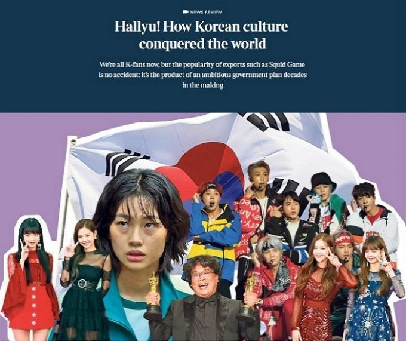
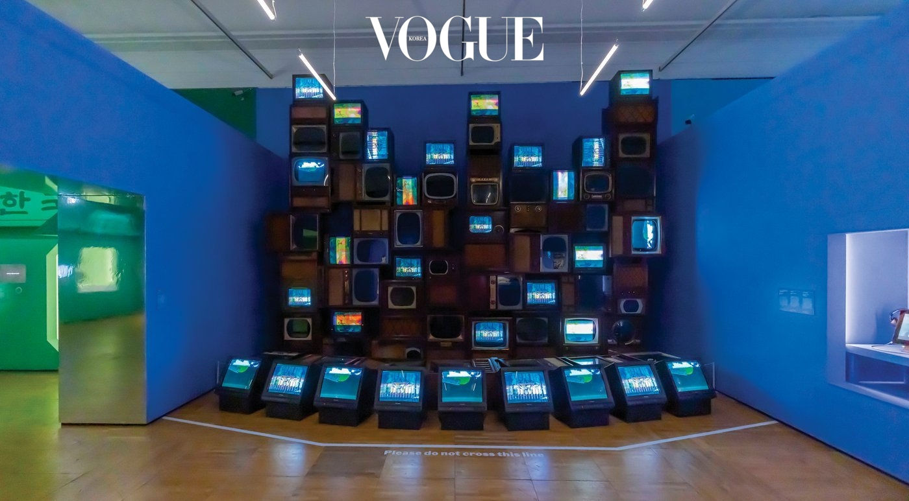
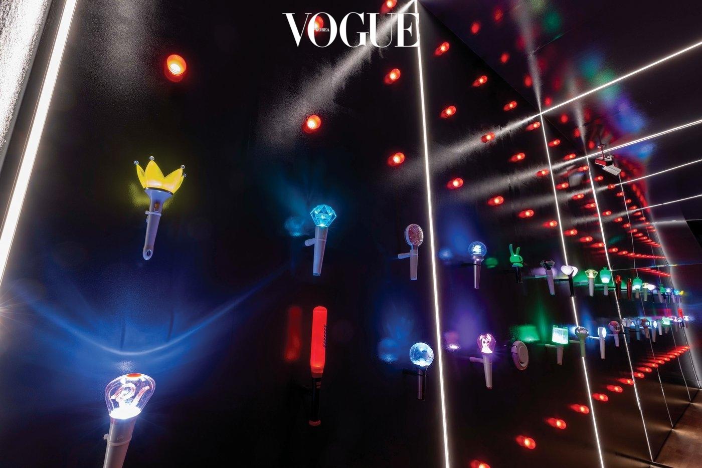
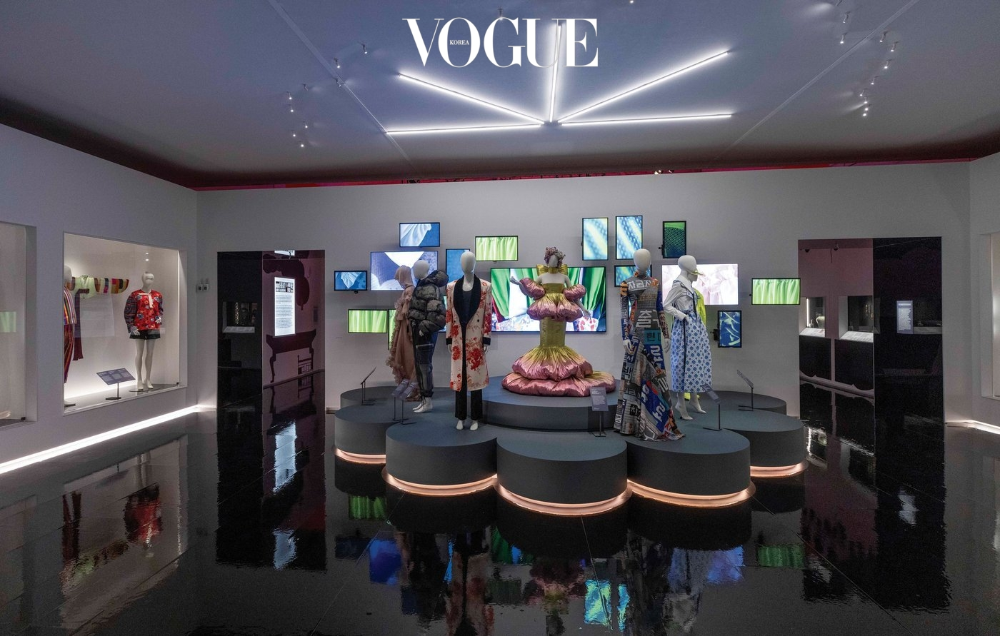

왜 지금 모두 ‘한국’을 말하는가?
아시아를 중심으로 세계 각국에서 흐르던 '한류(韓流)'. 한류란 무엇인가? 왜 지금 모두 ‘한국’을 말하는가? 한류는 어디서 왔고, 어디를 향하는가? 런던 빅토리아 앤 앨버트 박물관에서 열리는 전시, 'Hallyu! The Korean Wave'에서 그 질문에 대한 해답을 찾아본다.
서양과 일본을 중심으로 한 대중문화에 익숙해진 사람들에게 ‘한류’란 미지의 세계였다고 해도 과언이 아니다. 서양과 일본의 문화가 더 세련되고 모던한 것이라는 고정관념은 아주 오랫동안 음악, 영화, 패션, 음식, 코스메틱 등 다양한 장르에 뿌리 깊이 자리 잡고 있었으니까.
그런데 언제부터였을까. 그런 거대한 편견은 조금씩 무너지기 시작했다. 1990년대 후반부터 아시아를 중심으로 퍼진 K-드라마와 K-뷰티 열풍은 싸이와 방탄소년단이 바통을 이어받아 유엔과 그래미 무대까지 이어졌으며, '기생충'과 '오징어 게임'에서 폭죽처럼 터졌다. 그 후 그래미나 오스카 같은 시상식이나 '보그' '타임' 같은 권위 있는 매거진의 커버에서 한국 가수와 배우의 모습을 보는 것이 꽤 익숙한 일이 되어버렸다. 그것이 더 이상 ‘신기하고 감격스러운 일’이 아니라는 사실이 정말 신기하고 감격스러울 정도라고 할까!
그렇게 한류는 잠깐 반짝했다가 사라지고 마는 유행이나 마이너 컬처가 아니라, 전 세계 대중문화의 새로운 ‘사조’로 확고히 자리매김하고 있다. 기존 대중문화 예술의 문법을 완전히 뒤집은, 21세기의 누벨바그!
런던의 빅토리아 앤 앨버트 박물관(V&A)은 꽤 오래전부터 이 심상치 않은 한류의 흐름에 주목했다. 이미 지난해 초부터 V&A에서 한국 관련 전시를 준비하고 있다는 소문이 무성했으니까. 고급 미술과 함께 디자인, 퍼포먼스, 대중문화를 다루는 이 박물관에서 ‘한류’라는 거대한 물결을 간과할 리는 없을 것이다. (실제로 V&A가 10~20대 방문자를 대상으로 ‘가장 관심 있는 나라가 어디인지’ 설문 조사를 실시했는데, 한국이 압도적으로 많은 표를 받았다.)
한류를 향한 V&A의 항해는 한국의 역사적 맥락을 연구하고 소개하는 것부터 시작된다. 그리고 영화와 드라마, 음악과 팬덤을 통해 한류의 형성 과정을 살펴본 뒤, 뷰티 및 패션 산업과 한류의 관계, 그 문화적 영향에 대해 차근차근 짚어나간다. 전시는 1. 기술 강국이 되기까지, 2. K 드라마와 영화, 새로운 세상을 펼치며, 3. K-팝과 팬덤, 세계적인 박자, 4. K 뷰티와 패션, 밝은 전망이라는 네 가지 섹션으로 분류했다.
이 전시를 기획한 큐레이터 로잘리 김은 한류는 한국의 이미지를 바꿔놓았다고 강조한다. “다채로운 대중문화 덕분에 한국전쟁의 상흔을 안은 나라에서 소셜 미디어와 디지털 문화를 선도하는 문화 강국으로 성장할 수 있었죠.”
전시는 2012년 한류에 불을 지핀 싸이의 ‘강남스타일’로 그 포문을 열었다. ‘기술 강국이 되기까지’라는 주제 아래 한국전쟁 후 폐허가 된 나라가 문화 강국으로 탈바꿈할 수밖에 없었던 배경과 역사적 맥락부터 짚어나갔다. 급속한 성장의 이면엔 'Pali Pali(빨리빨리)'라는 한국인 특유의 기질이 뒷받침되었다는 설명과 함께 일제강점기, 군사정권, 강남 개발, 급격한 산업화와 경제성장, 올림픽 그리고 외환 위기와 월드컵 등 한국의 드라마틱한 근현대사를 꼼꼼히 조명했다. 또 IT 강국 한국을 증명하기 위한 다양한 사진 자료와 초기 전자 기기를 전시한 코너도 무척 흥미로웠다. 놀라운 디지털 기술과 문화가 있었기에 오늘날의 한류가 존재할 수 있었다는 사실을 다시 한번 실감할 수 있었으니까. 거기에 33대의 텔레비전 모니터로 만든 백남준의 비디오아트 설치 작품까지 더해 전시 내용에 무게를 실어주었음은 물론이다. 늘 전시를 뒷받침하는 탄탄한 역사적 텍스트와 예술 작품의 공존을 중요하게 여기는 V&A 특유의 큐레이팅이 빛을 발하는 순간이었다. 더불어 ‘한류는 어디서 왔는가’라는 질문에 대한 어떤 대답처럼 느껴지기도 했다.
무엇보다 한류가 전 세계인에게 제대로 각인되기 시작한 것은 드라마나 영화 같은 영상 예술의 힘이 크다. 두 번째 섹션인 'K 드라마와 영화, 새로운 세상을 펼치며’에서는 1990년대부터 성장해온 한국 드라마와 영화를 이야기한다. 오스카 수상에 빛나는 봉준호 감독 '기생충'의 반지하 세트가 재현되었고, '오징어 게임' 의상과 '아가씨'의 소품이 다채롭게 펼쳐졌다. 이 섹션에선 새삼스럽게 한국 드라마와 영화 콘텐츠의 양적, 질적 성장이 놀랍기만 했다. 전시 공간이 비좁게 느껴질 정도였으니 말이다. 일부 영화는 세트나 포스터와 더불어 좀 더 큰 화면을 통해 전시해도 좋았을 것 같다는 아쉬움이 있었다.
전시의 클라이맥스는 세 번째 섹션인 'K-팝과 팬덤, 세계적인 박자'였다. V&A는 단순히 K-팝의 음악이나 영상만 전시하는 데서 그치지 않고, K-팝의 확산에 큰 영향을 미친 소셜 미디어와 팬덤의 역할을 면밀히 분석했다. 사실 팬덤을 빼놓고는 K-팝을 논하기 어려울 만큼, 그 힘과 영향력은 막강하니까. “K-팝은 디지털 문화에 능하며 사회의식을 갖춘 글로벌 팬들에 의해 더 증폭되었죠. 이는 한류가 전 세계로 확산되는 데 큰 역할을 했음은 물론입니다.” 큐레이터 로잘리 김은 이렇게 전한다.
아이돌의 야광봉으로 둘러싸인 복도를 통과해 전시실에 입장하면, 처음 ‘아이돌’이라는 개념을 불러온 서태지와 아이들의 ‘난 알아요’ 뮤직비디오가 관람객을 맞이한다. 그 외에 보아, 빅뱅, 블랙핑크, 방탄소년단, 슈퍼주니어 같은 K-팝 스타들의 옷과 뮤직비디오를 전시했고, 빅뱅과 방탄소년단의 비주얼 디렉터 지은과 발코가 제안하는 'K-팝 스타일링' 섹션 또한 많은 젊은 관객이 흥미롭게 지켜보았다. 그런데 이 K-팝 섹션에서 관람객에게 가장 열띤 호응을 얻은 것은 구글 아트 앤 컬처 랩과 협업해 K-팝 안무 챌린지를 할 수 있는 체험관이었다. 커다란 화면 앞에서 K-팝 안무를 따라 하는 다양한 국적과 연령대의 관람객의 모습을 볼 수 있었으니 말이다. 그간 전시마다 최고의 퀄리티를 자랑하는 디지털 퍼포먼스를 선보여온 V&A다운 아이디어가 아닐 수 없다.
이 K-팝 섹션에도 역시 전시 내용을 뒷받침하는 예술 작품이 눈길을 끌었다. 바로 아티스트 권오상이 만든 3M 크기의 거대한 사진 조각 ‘무제의 지드래곤, 이름이 비워진 자리’! 성 미카엘 대천사와 악마가 싸우는 형상에 지드래곤을 대입한 이 사진 조각은 K-팝의 화려함과 아이돌의 허상을 극적으로 보여주는 어떤 상징처럼 느껴졌다. 그래서였을까? 번쩍이는 조명과 K-팝 음악이 울려 퍼지는 전시장 한쪽에 놓인 이 작품은 많은 사람의 발걸음을 멈추게 했다. 이 전시의 클라이맥스라고 해도 과언이 아니었다.
마지막 섹션은 한국의 뷰티와 패션에 대해 다루는 'K 뷰티와 패션, 밝은 전망'이다. K-뷰티에 대한 V&A의 시선은 무려 13세기로 거슬러 올라간다. 그 당시 화장품 용기로 사용된 청자부터, 조선 시대 여자들의 화장법, 전쟁 직후에 영국으로 첫 수출한 화장품 광고, 아이돌 얼굴이 프린트된 오늘날의 화장품 패키지 등을 전시해 K-뷰티의 역사적 사례를 한눈에 읽을 수 있었다. 그 밖에 K-뷰티가 제시한 새로운 미적 기준과 세계적으로 인지도를 얻게 된 현상(드라마 PPL, 잡지 커버, 광고) 등을 자세히 기록했다.
개인적으로 가장 기대가 크던 패션 섹션에서는 현대적으로 재해석한 한복과 한국 패션 디자이너의 옷을 감상할 수 있었다. 계한희, 디앤티도트, 블라인드니스, 미스 소희 등을 만드는 젊은 디자이너들의 활약을 소개했고, 한국을 대표하는 패션 스타일리스트 서영희는 이 전시를 위해 서양 속옷과 한복 속옷을 조합한 독창적인 스타일링 작업을 선보였다. ‘바람의 옷’이라는 이름으로 불리는 이영희의 아름다운 한복, 차이킴의 한복 원피스 외에 두루마기에서 영감을 얻은 정욱준의 코트, 보자기에서 영감을 얻은 단하의 한복 등 다양한 디자인의 한복을 살펴볼 수 있었다. 특히 블랙핑크 같은 K-팝 스타의 무대의상을 위해 현대적으로 변형한 한복 스타일링은 많은 관람객의 주목을 받았다. 이렇듯 V&A가 조명한 한류는 무척 입체적인 시선과 방식으로 전시되었다. 한국의 역사적 사물과 대중문화, 예술, 사회현상 등을 긴밀하게 연결하고 배치하며, 관람객으로 하여금 ‘한류’라는 거대한 가상 세계를 체험한 것 같은 기분이 들게 만들었으니!
그러나 전시를 감상하는 동안 한류의 넘치는 에너지와 역동성, 다양성을 이 네 가지 그릇에만 담는 것은 쉬운 일이 아니었을 것이라 짐작할 수 있었다. 매 섹션마다 한정된 공간과 기획 아래에서 한류를 제대로 탐구하고 소개하려는 큐레이터들의 기획력에 감탄했고, 일부 텍스트나 작품 앞에선 전율이 느껴지기도 했지만 몇 가지 아쉬운 점은 분명히 있었으니까. 이를테면 K-팝의 핵심인 팬덤 문화에 대한 설명이 좀 더 구체적이면 어땠을까 했고, 드라마나 영화의 원작이 되는 문학 작품이나 웹툰도 좀 더 다양하게 소개하면 좋지 않았을까 하는 생각이 들었다. 또 새로운 미의 기준을 제시하는 K-뷰티가 오로지 화장품에 대한 이야기로만 국한된 점, K-팝이나 영화와 함께 한류의 가장 큰 축을 이루는 K-푸드에 관련된 콘텐츠가 전무했다는 점은 가장 큰 아쉬움으로 남았다. 그래서일까? 수준 높은 큐레이팅에도 불구하고, 전시가 조금 짧게 느껴진 것도 사실이다.
그러나 이 세계적인 박물관에서 오랜 시간 한류를 주목하고, 연구하고, 전시를 기획했다는 것은 여러모로 시사하는 바가 크다. 그들이 권위 있는 태도로 어떤 현상과 흐름을 ‘승인’했을 때, 온라인이나 사람들 사이에서 구전 가요처럼 떠돌던 것은 비로소 제자리와 이름을 찾게 되며, 사람들은 그 존재와 가치에 대해 생각하게 된다. 그것이 바로 박물관의 역할이며, 그 존재 이유일 것이다. 그렇게 승인된 현상과 흐름은 결국 한 시대의 ‘문화’로 기록되는 것일 테니까.
2022년 한류는 그렇게 21세기를 대표하는 ‘문화’로 기록되었다. 그리고 미래를 향해 뜨겁게 흐르고 있다.
VOGUE 글 오선희(독립 출판사 'Poets and Punks' 발행인)